Tungsten Fabric Architecture
Detailed Technical Description of the Virtual Networking and Security Platform
Introduction
Use Cases
Key Features of Tungsten Fabric
How Tungsten Fabric Works
Tungsten Fabric Working with An Orchestrator
Interaction With An Orchestrator
Architecture Details of vRouter
Detailed Packet Processing Logic In a vRouter
Packet Flow Between VMs In The Same Subnet
Packet Flow Between VMs In Different Subnets
Service Chains
Basic Service Chain
Scaled-out Services
Policy-based Steering
Application-based Security Policies
Creating an Application Policy
Controlling Flows Between Deployments
Advanced Application Policies
Deployment Options for vRouter
Kernel Module vRouter
DPDK vRouter
SR-IOV (Single Root – Input/Output Virtualization)
Smart NIC vRouter
Tungsten Fabric Collection and Analytics
Tungsten Fabric APIs
Controller Configuration REST API
Python Bindings
Analytics REST API
Orchestrators
OpenStack with Tungsten Fabric
Kubernetes Containers with Tungsten Fabric
Tungsten Fabric and VMware vCenter
Nested Kubernetes with OpenStack or vCenter
Connecting to Physical Networks
BGP-Enabled Gateway
Source NAT
Routing in Underlay
Introduction
This document describes how Tungsten Fabric provides a scalable virtual networking platform that works with a variety of virtual machine and container orchestrators, and can integrate with physical networking and compute infrastructure. Tungsten fabric uses networking industry standards such as BGP EVPN control plane and VXLAN overlays to seamlessly connect workloads in different orchestrator domains. E.g. Virtual machines managed by VMware vCenter and containers managed by Kubernetes.
As virtualization becomes a key technology for delivery of both public and private cloud services, issues of network scale are becoming apparent with the virtualization technologies that have been in widespread use to date (E.g. VMware with L2 networking, and OpenStack with stock Nova, Neutron or ML2 networking). Tungsten Fabric provides a highly scalable virtual networking platform that is designed to support multi-tenant networks in the largest environments while supporting multiple orchestrators simultaneously.
Since there are very few datacenter deployments that are truly “greenfield”, there are nearly always requirements to integrate workloads deployed on new infrastructure with workloads and networks that have been previously deployed. This document describes a set of scenarios for deployments where new cloud infrastructure will be deployed, and where coexistence with existing infrastructure is also needed.
Use Cases
The following common use cases are covered in this document:
- Enable Platform-as-a-Service and Software-as-a-Service with high scalability and flexibility in OpenStack-managed datacenters
- Virtual networking with Kubernetes container management system, including with Red Hat OpenShift
- Allow new or existing virtualized environment running VMware vCenter to use Tungsten Fabric virtual networking between virtual machines
- Connect Tungsten Fabric virtual networks to physical networks using gateway routers with BGP peering with networking overlays, and directly through the data center underlay network
These use cases can be deployed in any combination to address the specific requirements in a variety of deployment scenarios. The main feature areas of Tungsten Fabric are illustrated below.
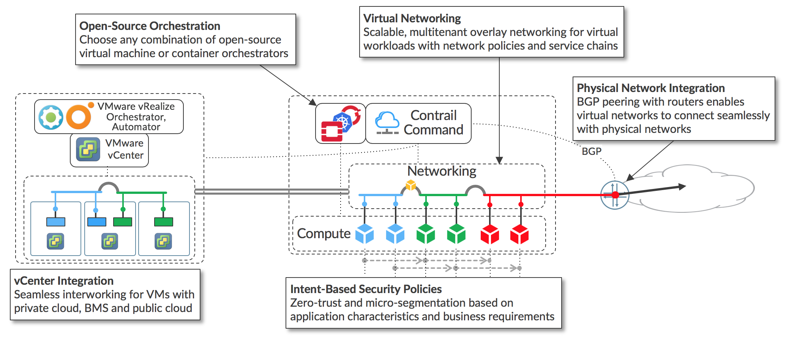
The key feature areas that enable support of the main use cases are:
- Virtual networking using encapsulation tunnels between virtualized hosts
- Plugins for open-source orchestrators for virtual machines and containers
- Application-based security policies based on tags
- Integration with VMware orchestration stack
- Connection to external networks using BGP, SNAT, and via the underlay network.
Since the same controller and forwarding components are used in every implementation, Tungsten Fabric provides a consistent interface for managing connectivity in all the environments it supports, and is able to provide seamless connectivity between workloads managed by different orchestrators, whether virtual machines or containers, and to destinations in external networks.
Key Features of Tungsten Fabric
Tungsten Fabric manages and implements virtual networking in cloud environments using OpenStack and Kubernetes orchestrators. Tungsten Fabric uses overlay networks between vRouters that run on each host. It is based on proven, standards-based networking technologies that today support the wide-area networks of the world’s major service providers, but repurposed to work with virtualized workloads and cloud automation in data centers that can range from large scale enterprise data centers to much smaller telco POPs. It provides many enhanced features over the native networking implementations of orchestrators, including:
- Highly scalable, multi-tenant networking
- Multi-tenant IP address management
- DHCP, ARP proxies to avoid flooding into networks
- Efficient edge replication for broadcast and multicast traffic
- Local, per-tenant DNS resolution
- Distributed firewall with access control lists
- Application-based security policies
- Distributed load balancing across hosts
- Network address translation (1:1 floating IPs and distributed SNAT)
- Service chaining with virtual network functions
- Dual stack IPv4 and IPv6
- BGP peering with gateway routers
- BGP as a Service (BGPaaS) for distribution of routes between privately managed customer networks and service provider networks
The following sections describe in detail how the controller interacts with an orchestrator and the vRouters, and how the above features are implemented and configured in the vRouter.
How Tungsten Fabric Works
This section describes the software architecture of the Tungsten Fabric controller and of the vRouter, which forwards packets in each host, and describes the interaction between vRouters and the Tungsten Fabric controller when virtual machines or containers are started and then exchange packets with each other.
Tungsten Fabric Working with An Orchestrator
The Tungsten Fabric controller integrates with cloud management systems such as OpenStack or Kubernetes. Its function is to ensure that when a virtual machine (VM) or container is created, it is provided with network connectivity according to the network and security policies specified in the controller or orchestrator.
Tungsten Fabric consists of two primary pieces of software
- Tungsten Fabric Controller– a set of software services that maintains a model of networks and network policies, typically running on several servers for high availability
- Tungsten Fabric vRouter– installed in each host that runs workloads (virtual machines or containers), the vRouter performings packet forwarding and enforces network and security policies.
A typical deployment of Tungsten Fabric is shown below.

The Tungsten Fabric controller integrates with an orchestrator via a software plugin that implements the networking service of the orchestrator. For instance, the Tungsten Fabric plugin for OpenStack implements the Neutron API, and the kube-network-manager and CNI (container network interface) components listen to network-related events using the Kubernetes k8s API.
The Tungsten Fabric vRouter replaces Linux bridge and IP tables, or Open vSwitch networking on the compute hosts, and the controller configures the vRouters to implement the desired networking and security policies.
Packets from a VM on one host that have a destination running on a different host are encapsulated in MPLS over UDP/GRE or VXLAN where the destination of the outer header is the IP address of the host that the destination VM is running on. The controller is responsible for installing the set of routes in each VRF of each vRouter that implements network policies. E.g. by default, VMs in the same network can communicate with each other, but not with VMs in different networks, unless this is specifically enabled in a network policy. Communication between the controller and vRouters is via XMPP, a widely used and flexible messaging protocol.
A key feature of cloud automation is that users can request resources for their applications without needing to understand details of how or even where resources will be provided. This is normally done via a portal that presents a set of service offerings from which a user can select, and which get translated into API calls into underlying systems including the cloud orchestrator to spin up virtual machines or containers with the necessary memory, disk and CPU capacity for the user’s requirements. Service offerings can be as simple as a VM with specific memory, disk and CPU allocated to it, or may include an entire application stack composed of multiple pre-configured software instances.
Interaction With An Orchestrator
The architecture of the Tungsten Fabric controller and vRouter, and the interaction with an orchestrator is shown below.
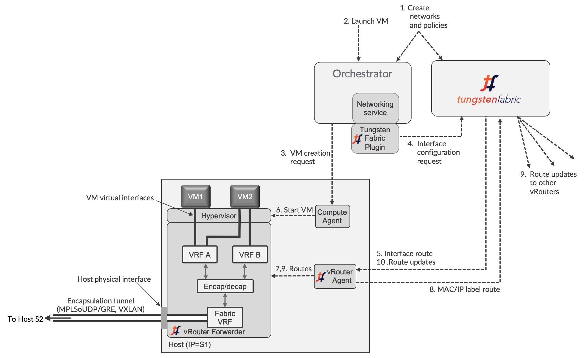
The diagram shows an orchestrator working hypervisors and virtual machines, but the flow of information is similar for a container orchestrator, such as Kubernetes (see XXX [Kubernetes Containers with Tungsten Fabric]. Each interface of the workload running on the host is connected to a VRF that contains L2 and L3 forwarding tables for the corresponding network that contains the IP address of that interface. The vRouter implements the classic Integrated Bridgine and Routing (IRB) function that physical routers perform. A vRouter only has VRFs for networks that have interfaces in them on that host, including the Fabric VRF that connects to the physical interface of the host. The use of VRFs allows different virtual networks to have overlapping IP and MAC addresses, providing no network policies are defined to allow traffic between them. Tungsten Fabric virtual networking uses encapsulation tunneling to transport packets between VMs on different hosts, and the encapsulation and decapsulation happens between the Fabric VRF and the VM VRFs. This is explained in more detail in the next section.
When a new virtual workload is created, an event is seen in the orchestrator-specific plugin and sent into the controller, which then sends requests to the agent for routes to be installed in the VRFs for virtual networks, and the agent then configures them in the forwarder.
The logical flow for configuring networking on a new VM with a single interface is as follows:
- Networks and network policies are defined in either the orchestrator or Tungsten Fabric using UI, CLI, or northbound REST API. A network is primarily defined as a pool of IP addresses which will be allocated to interfaces when VMs are created.
- VM is requested to be launched by a user of the orchestrator, including which network its interface is in.
- The orchestrator selects a host for the new VM to run on, and instructs the compute agent on that host to fetch its image and start the VM
- The Tungsten Fabric plugin receives events or API calls from the networking service of the orchestrator instructing it to set up the networking for the interface of the new VM that will be started. These instructions are converted into Tungsten Fabric REST calls and sent to the Tungsten Fabric controller
- The Tungsten Fabric controller sends a request to the vRouter agent for the new VM virtual interface to be connected to the specified virtual network. The vRouter agent instructs the vRouter Forwarder to connect the VM interface to the VRF for the virtual network. The VRF is created, if not present, and the interface is connected to it.
- The compute agent starts the VM which will usually be configured to request IP addresses for each of its interfaces using DHCP. The vRouter proxies the DHCP requests and responds with the interface IP, default gateway and DNS server addresses.
- Once the interface is active and has an IP address from DHCP, the vRouter will install routes to the VM’s IP and MAC addresses with a next hop of the VM virtual interface.
- The vRouter assigns a label for the interface and installs a label route in the MPLS table. The vRouter sends an XMPP message to the controller containing a route to the new VM. The route has a next hop of the IP address of the server that the vRouter is running on, and specifies an encapsulation protocol using the label that was just allocated.
- The controller distributes the route to the new VM to the other vRouters with VMs in the same network and in other networks, as allowed by network policy.
- The controller sends routes for the other VMs, as allowed by policy, to the vRouter of the new VM.
At the end of this procedure, the routes in the VRFs of all the vRouters in the datacenter have been updated to implement the configured network policies, taking account of the new VM.
Architecture Details of vRouter
This section describes the architecture of the Tungsten Fabric vRouter in more detail. A conceptual view of the functional components of the Tungsten Fabric vRouter is shown below.

The vRouter agent runs in the user space of the host operating system, while the forwarder can run as a kernel module, in user space when DPDK is used, or can run in a programmable network interface card, also known as a “smart NIC”. These options are described in more detail in the section [Deployment Options for vRouter]. The more commonly use kernel module option is illustrated here.
The agent maintains a session with the controller and is sent information about VRFs, routes and access control lists (ACLs) that it needs. The agent stores the information in its own database, and uses the information to configure the forwarder. Interfaces get connected into VRFs, and the forwarding information base (FIB) in each VRF is configured with forwarding entries.
Each VRF has its own forwarding and flow tables, while the MPLS and VXLAN tables are global within the vRouter. The forwarding tables contain routes for both the IP and MAC addresses of destinations and the IP-to-MAC association is used to provide proxy ARP capability. The values of labels in the MPLS table are selected by the vRouter when VM interfaces come up, and are only locally significant to that vRouter. The VXLAN Network Identifiers are global across all the VRFs of the same virtual network in different vRouters within a Tungsten Fabric domain.
Each virtual network has a default gateway address allocated to it, and each VM or container interface receives that address in the DHCP response it gets when initializing. When a workload sends a packet to an address outside its subnet, it will ARP for the MAC corresponding to the IP address of the gateway IP, and the vRouter responds with its own MAC address. Thus, the vRouters support a fully distributed default gateway function for all the virtual networks.
Detailed Packet Processing Logic In a vRouter
The logic details for packets flowing from a VM and into a VM are slightly different and described in the following two diagrams and descriptions.
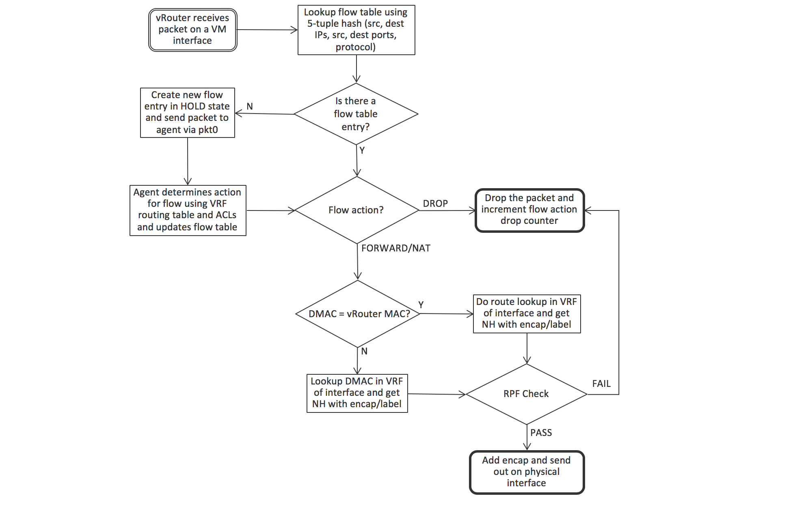
When a packet is sent from a VM through a virtual interface, it is received by the forwarder, which first checks if there is an entry matching the packets’ 5-tuple (protocol, source and destination IP addresses, source and destination TCP or UDP ports) in the flow table of the VRF that the interface is in. There won’t be an entry if this is the first packet in a flow, and the forwarder sends the packet to the agent over the pkt0 interface. The agent determines the action for the flow based on the VRF routing table and access control list, and updates the flow table with the result. The actions can be DROP, FORWARD, NAT or MIRROR. If the packet is to be forwarded, the forwarder checks to see if the destination MAC address is its own MAC address, which will be the case if the VM is sending a packet to the default gateway when the destination is outside the VM’s subnet. In that case, the next hop for destination is looked up in the IP forwarding table, otherwise the MAC address is used for lookup. The vRouter is performing the IRB (Integrated Routing and Bridging) function of a physical router here, but within a compute node.

When a packet arrives from the physical network, the vRouter first checks if the packet has a supported encapsulation or not. If not, the packet is sent to the host operating system. For MPLS over UDP and MPLS over GRE, the label identifies the VM interface directly, but VXLAN requires that the destination MAC address in the inner header be looked up in the VRF identified by the VLAN Network Identifier (VNI). Once the interface is identified, the vRouter can forward the packet immediately if there is no policy flag set for the interface (indicating that all protocols and all TCP/UDP ports are permitted). Otherwise the 5-tuple is used to look up the flow in the flow table and the same logic as described for an outgoing packet is used.
Packet Flow Between VMs In The Same Subnet
The sequence of action that occurs when an application in a VM first sends a packet to another VM is shown in the following diagram. The starting point is that both VMs have booted and the controller has sent L2 (MAC) and L3 (IP) routes to both vRouters to enable communication between the VMs. The sending VM has not previously sent data to the other VM, so has not previously resolved the destination name via DNS.
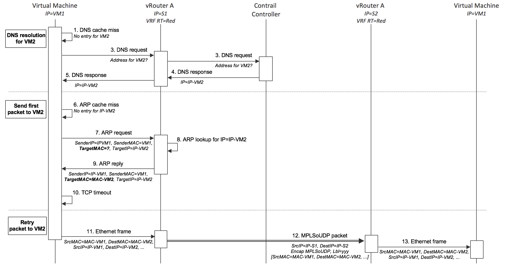
- VM1 needs to send a packet to VM2, so first looks up its own DNS cache for the IP address, but since this is the first packet, there is no entry.
- VM1 sends a DNS request to the DNS server address that was supplied in the DHCP response when its interface came up.
- The vRouter traps the DNS request and forwards it to the DNS server running in the Tungsten Fabric controller.
- The DNS server in the controller responds with the IP address of VM2
- The vRouter sends the DNS response to VM1
- VM1 needs to form an Ethernet frame, so needs the MAC address for VM2. It checks its own ARP cache, but there is no entry, since this is the first packet.
- VM1 sends out an ARP request.
- The vRouter traps the ARP request and looks up the MAC address for IP-VM2 in its own forwarding tables and find the association in the L2/L3 routes that the controller sent it for VM2.
- The vRouter sends an ARP reply to VM1 with the MAC address of VM2
- A TCP timeout occurs in the network stack of VM1
- The network stack of VM1 retries sending the packet, and this time finds the MAC address of VM2 in the ARP cache and can form an Ethernet frame and send it out.
- The vRouter looks up the MAC address for VM2 and finds an encapsulation route. The vRouter builds the outer header and sends the resulting packet to S2.
- The vRouter on S2 decapsulates the packet and looks up the MPLS label to identify the virtual interface to send the original Ethernet frame into. The Ethernet frame is sent into the interface and received by VM2.
Packet Flow Between VMs In Different Subnets
The sequence when sending packets to destinations in a different subnet is identical except that the vRouter responds as the default gateway. VM1 will send the packet in an Ethernet frame with the MAC address of the default gateway whose IP address was supplied in the DHCP response that the vRouter supplied when VM1 booted. When VM1 does an ARP request for the gateway IP address, the vRouter responds with its own MAC address. When VM1 sends an Ethernet frame using that gateway MAC address, the vRouter uses the destination IP address of the packet inside the frame to look up the forwarding table in the VRF to find a route, which will be via an encapsulation tunnel to the host that the destination is running on.
Service Chains
A service chain is formed when a network policy specifies that traffic between two networks has to flow through one or more network services, (e.g. firewall, TCP-proxy, load-balancer, …) , also termed Virtual Network Functions (VNF). The network services are implemented in VMs which are identified in Tungsten Fabric as services which are then included in policies. Tungsten Fabric supports service chains in both OpenStack and VMware vCenter environments. A simplified view of the routes that implement a service chain between two VMs is shown in below (in the actual Tungsten Fabric implementation, special “service” VRFs contain the routes through the service chain).
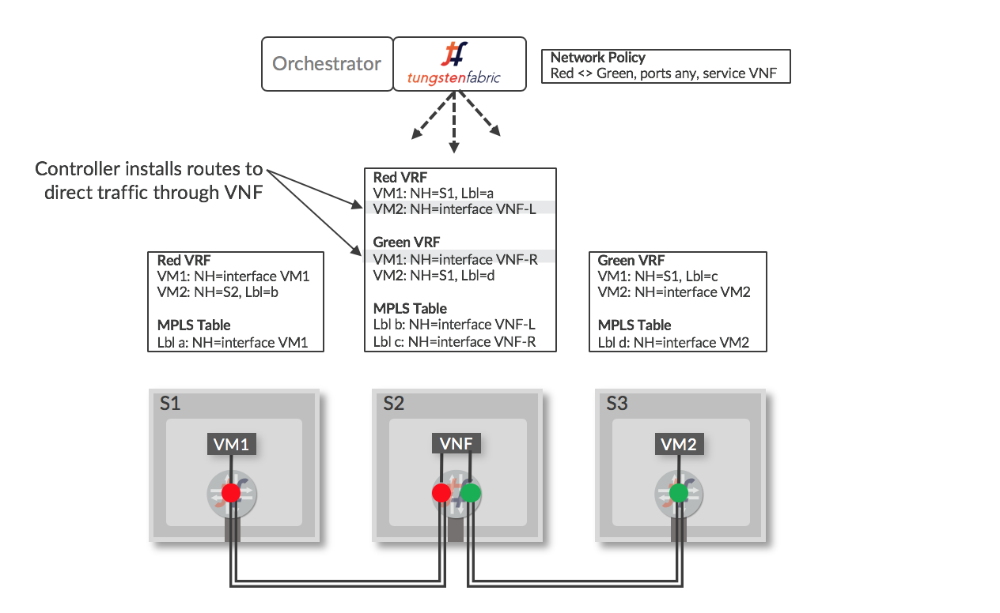
When a VM is configured in the controller to be a service instance (VNF), and the service is included in a network policy that is applied to networks the policy refers to, the controller installs routes in the VRFs of the “Left” and “Right” interfaces of the VNF that direct traffic through the VNF. When encapsulation routes are advertised by the VNF vRouter back to the controller, the routes are distributed to other vRouters that have Red and Green VRFs and the end result is a set of routes that direct traffic flowing between the Red and Green network to pass through the service instance. The labels “Left” and “Right” are used to identify interfaces based on the order that they become active when the VNF is booted. The VNF has to have a configuration that will process packets appropriately based on the interfaces that they will arrive on.
Services (VNFs) can be of three types:
- Layer 2 Transparent - Ethernet frames are sent into the service with the destination MAC address being that of the original destination (bump in the wire). This is most commonly used for deep packet inspection services.
- Layer 3 (In Network) - Frames are sent into the service with the destination MAC set to that of the ingress interface of the service, which terminates the L2 connection and sets up a new one using the egress MAC as the source MAC for frames sent to the destination. This is used for firewalls, load balancers and TCP proxies.
- Layer 3 (NAT) - Same as In Network, except that the service changes the source IP address to one that is routable from the destination (network address translation).
Various service chain scenarios are illustrated below, and a brief explanation each follows.
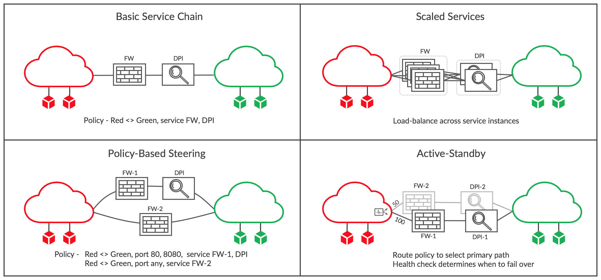
Basic Service Chain
In the first panel, a simple service chain has been created by editing the network policy between the Red and Green networks to include the services FW and DPI. These are VMs that were previously started in OpenStack or vCenter and then configured in Tungsten Fabric to be service instances with interfaces in the Red and Green networks. When the policy is saved and is applied to the two networks, the routes in all the vRouters with Red or Green VMs attached are modified to send traffic via the service chain. For instance, prior to modifying the policy, each VRF in the Red network would have had a route to each VM in the Green network with a next hop of the host where the VM is running and a label that was specified the host vRouter and sent by the controller. The route is modified to have a next hop of the ingress VRF of the FW service instance, and the label that was specified for the FW left interface. The VRF with the right FW interface will have a routes for all Green destinations that point to the left interface of DPI, and the right VRF of DPI will contain routes for all Green destinations with next hop of the host where they are running and the original label. Routes for traffic in the reverse direction is similarly handled.
Scaled-out Services
When a single VM does not have the capacity to handle the traffic requirements of a service chain, multiple VMs of the same type can be included in a service, as shown in the second panel. When this is done, traffic is load-balanced using ECMP across the ingress interfaces of the service chain at both ends, and is also load-balanced between layers of the chain.
New service instances can be added as needed in Tungsten Fabric, and although a traditional ECMP hash algorithm implementation would normally move most sessions to other paths when the number of targets changes, in Tungsten Fabric this only happens for new flows, since the paths for existing flows are determined from the flow tables described in the section XXX Detailed Packet Processing Logic In a vRouter. This behavior is essential for stateful services that must see all packets in a flow, or else the flow will be blocked, resulting in a dropped user session.
The flow tables are also populated to ensure that traffic for the reverse direction in a flow passes through the same service instance that it came from.
The internet draft at https://datatracker.ietf.org/doc/draft-ietf-bess-service-chaining contains more details on scaled out service chains with stateful services.
Policy-based Steering
There are cases where traffic of different types needs to be passed into different services chains. This can be achieved in Tungsten Fabric by including multiple terms in a network or security policy. In the example in the diagram, traffic on ports 80 and 8080 have to pass through both a firewall (FW-1) and DPI, whereas all other traffic only passes through a firewall (FW-2), which may have a different configuration from FW-1.
Active-Standby Service Chains
In some scenarios it is desirable for traffic to normally go through some specific service chain, but if there are issues detected with that chain, then traffic should be switched to a backup. This can be the case where the standby service chain is located in a less favorable geographic location.
Active-standby configuration is achieved in two steps in Tungsten Fabric. First a route policy is applied to the ingress of each service chain specifying a higher local preference value for the preferred active chain ingress. Secondly, a health check is attached to each chain that can test that service instances are reachable, or that a destination on the other side of the chain can be reached. If the health check fails, then the route to the normally active service chain is withdrawn and traffic will flow through the standby.
Application-based Security Policies
Conventional firewall policies contain rules based on individual IP addresses or subnet ranges. In data centers of any size this leads to a proliferation of firewall rules which are difficult to manage when being created and difficult to understand when troubleshooting. This is because the IP address of server or VM doesn’t relate to the application, application owner, location or any other property. For instance, consider an enterprise that has two data centers and deploys a three tier application in development and production, as shown below.
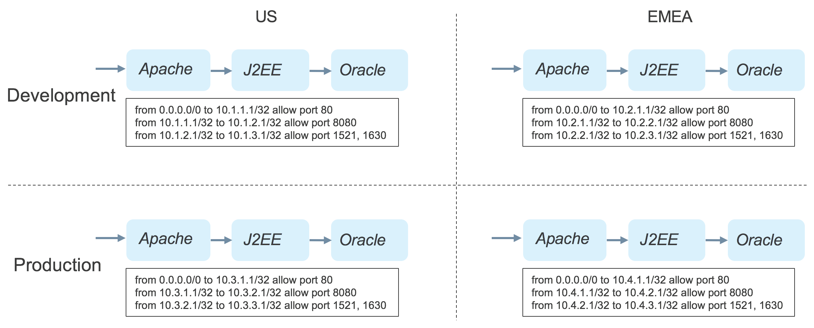
It is a requirement in this enterprise that the layers of each instance of an application can only communicate with the next layer in the same instance. This requires a separate policy for each of the application instances, as shown. When troubleshooting an issue, the admin must know the relation between IP addresses and application instances, and each time a new instance is deployed, a new firewall rule must be written.
Application Tags
The Tungsten Fabric controller supports security policies based on tags that can be applied to projects, networks, vRouters, VMs and interfaces. The tags propagate in the object model to all the objects contained in the object where the tag was applied, and tags applied at a lower level of the containment hierarchy take precedence over those applied at a higher level. Tags have a name and a value. A number of tag names are supplied as part of the Tungsten Fabric distribution. Typical uses for the tag types are shown in the table below:
| Tag Name | Typical Use | Examples |
| application | Identify a group of VMs that run a set of software instances of different types to support service accessed by end-users or other services. Can correspond to a Heat stack. | LAMP stack, Hadoop cluster, set of NTP servers, Openstack/Tungsten Fabric cluster |
| tier | A set of software instances of the same type within an application stack that perform the same function. The number of such instances may be scaled according to performance requirements in different stacks. | Apache web server, Oracle database server, Hadoop slave node, OpenStack service containers |
| deployment | Indicates the purpose of a set of VMs. Usually applies to all the VMs in a stack | development, test, production |
| site | Indicates the location of a stack, usually at the granularity of data center. | US East, London, Nevada-2 |
| custom | New tags can be created as needed | Instance name |
| label | Multiple labels can be applied to provide fine-grained control of data flows within and between stacks | customer-access, finance-portal, db-client-access |
As shown in the table, in addition to the tag types that are provided with Tungsten Fabric, users can create their own custom tag names as needed, and there is a _label _type tag which can be used to more finely tune data flows.
Creating an Application Policy
Application policies contain rules based on tag values and service groups, which are sets of TCP or UDP port numbers. First the security administrator allocates a tag of type _application _for the application stack, and assigns a tag of type _tier _for each software component of the application. This is illustrated below.
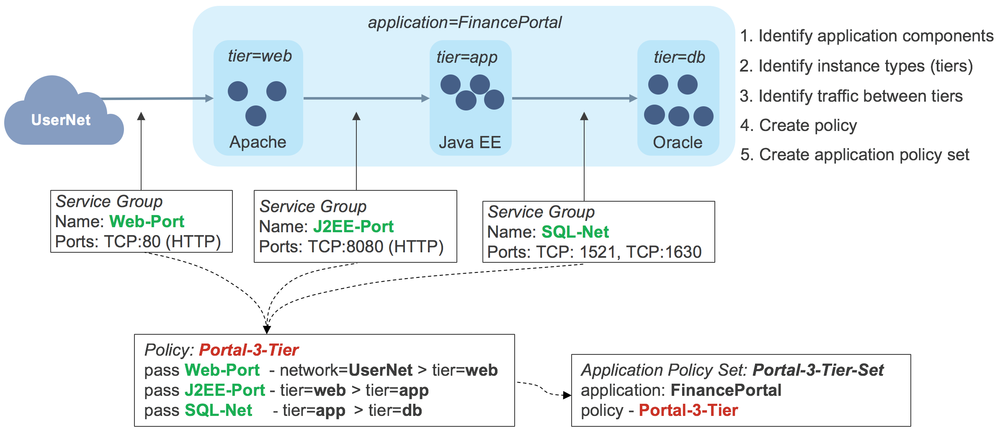
In this example, the application is tagged FinancePortal _and the tiers are tagged _web, app _and _db._Service groups have been created for the traffic flows into the application stack and between each layer. The security administrator then creates an application policy, called _Portal-3-Tier _containing rules that will allow just the required traffic flows. An application policy set is then associated with the application tag _FinancePortal and contains the application policy _Portal-3-Tier. _At this point the an application stack can be launched and the tags applied to the various VMs in the Tungsten Fabric controller. This causes the controller to calculate which routes need to be sent to each vRouter to enforce the application policy set, and these are sent to each vRouter. If there is one instance of each software component, the routing tables in each vRouter would be as follows:
| Host | VRF | Source | Destination | Ports | Route |
| S1 | Net-web | 0.0.0.0/0 \ 10.1.1.3/32 \ 10.1.1.3/32 | 10.1.1.3/32 \ 10.1.2.3/32 \ 0.0.0.0/0 | 80 \ 8080 \ Any | Interface for VM-web \ NH=S2, Lbl=10 \ Route to Internet |
| S2 | Net-app | 10.1.1.3/32110.1.2.3/321010.1.2.3/32 | 10.1.2.3/32 \ 10.1.3.3/32 \ 10.1.1.3/32 | 8080 \ 1521, 1630 \ 1521, 1630 | Interface for VM-app \ NH=S3, Lbl=12 \ NH=S1, Lbl=5 |
| S2 | Net-db | 10.1.2.3/3210.1.3.3/32 | 10.1.3.3/32 \ 10.1.2.3/32 | 1521, 1630 \ 1521, 1630 | Interface for VM-db \ NH=S3, Lbl=12 |
The networks and VMs are named here for the tier that they are in. In reality, the relationship between entity names and tiers would not usually be as simple. As can be seen in the table, the routes enable traffic only as specified in the application policy, but here the tag based rules have been converted into network address-based firewall rules that the vRouter is able to apply.
Controlling Flows Between Deployments
Having successfully created an application stack, let’s look at what happens when another deployment of the stack is created, as shown below.
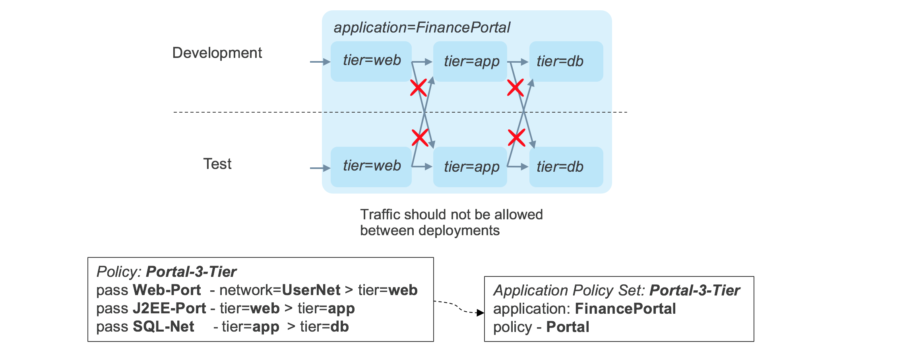
There is nothing in the original policy that prevents traffic flowing between a layer in one deployment into a layer in a different deployment. This behavior can be modified by tagging each component of each stack with a _deployment _tag, and by adding a _match _condition in the application policy to allow traffic to flow between tiers only when the deployment tags match. The updated policy is shown in below.
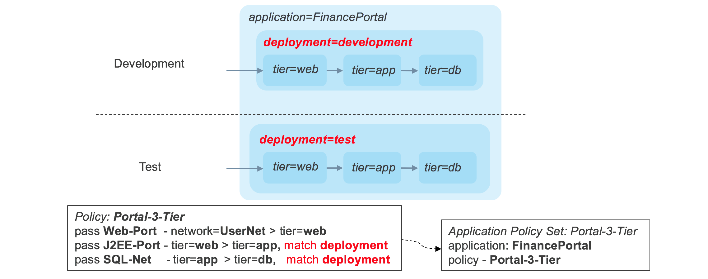
Now the traffic flows conform to the strict requirements that traffic only flows between components within the same stack.
Advanced Application Policies
Applying tags of different types allows the security policies to be applied in multiple dimensions, all in a single policy. For instance, in the diagram below, a single policy can segment traffic within individual stacks based on site, but allow sharing of the database tier within a site.
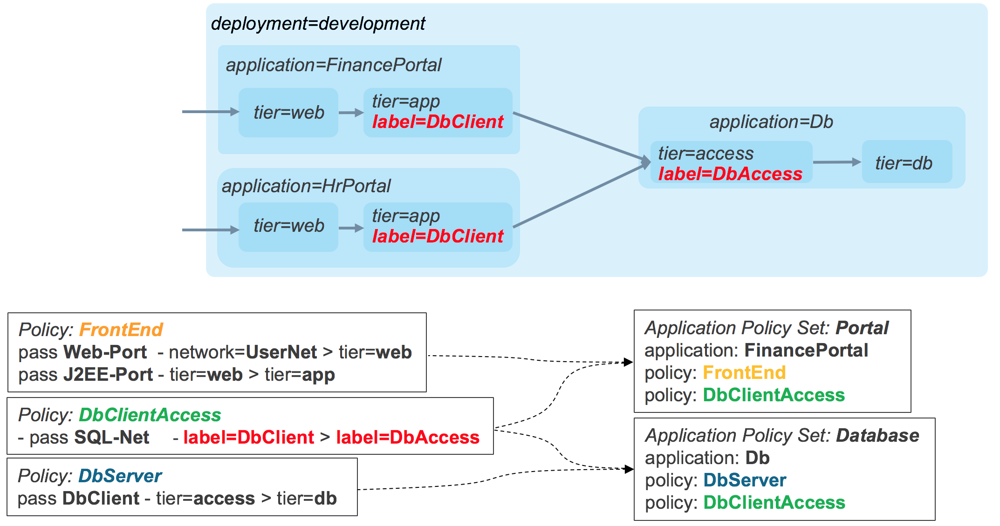
If multiple stacks are deployed within the same combination of sites and deployments, a custom tag for the instance name could be created and a match condition on the instance tag could be used to create the required restriction, as seen in the diagram, below.
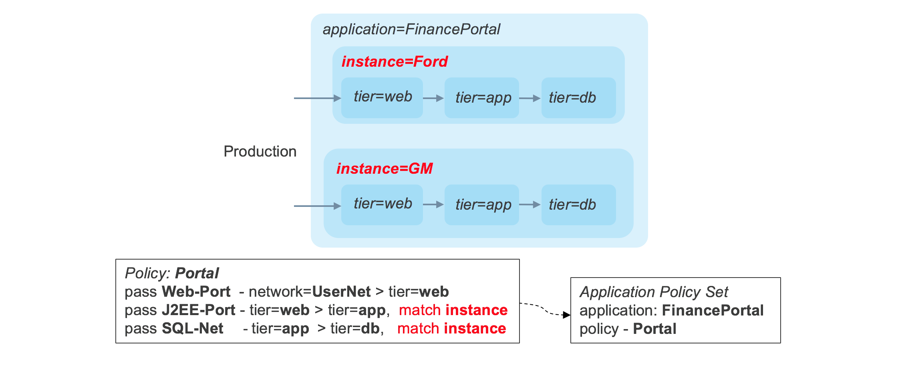
The application policy features in Tungsten Fabric provide a very powerful enforcement framework, while simultaneously enabling dramatic simplification of policies, and reduction in their number.
Deployment Options for vRouter
There are several deployment options for vRouter that offer different benefits and ease of use:
- Kernel Module– This is the default deployment mode
- DPDK– Forwarding acceleration is provided using an Intel library
- SR-IOV– Provides direct access to NIC from a VM
- Smart NIC– vRouter forwarder is implemented in a programmable NIC
These options are illustrated below.
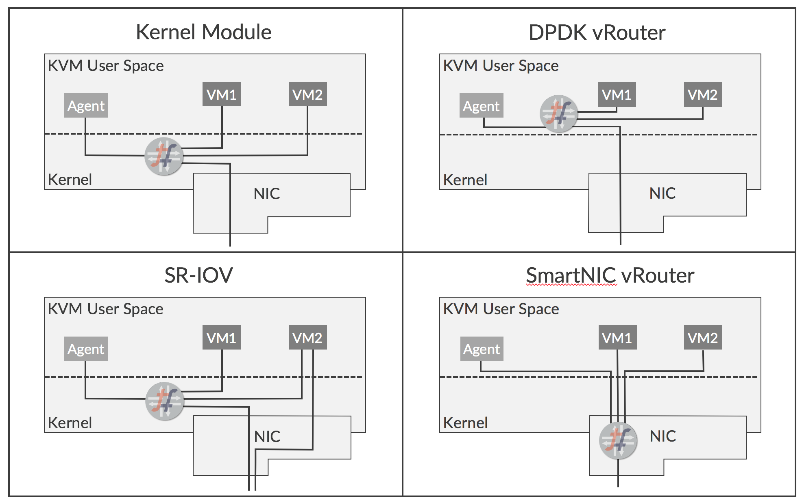
The features and benefits of each option are described below.
Kernel Module vRouter
The default deployment option today is for the vRouter forwarder to be implemented in a module that runs in the Linux kernel. The vRouter implements networking functionality that would otherwise be performed using iptables or Open vSwitch. Running in the kernel gives the forwarder direct access to network traffic as it passes through the network stack of KVM, and provides significant performance improvement over what can be achieved if the forwarder ran as a process in user space. Among the optimizations that have been implemented are:
- TCP segmentation offload
- Large receive offload
- Use of multi-queue virtio packet processing
The kernel module approach allows users to implement network virtualization using Tungsten Fabric with minimal dependency on underlying server and NIC hardware. However, only specific Linux kernel versions are supported.
DPDK vRouter
The Data Plane Development Kit (DPDK), from Intel, is a set of libraries and drivers that allow applications running in user space to have direct access to a NIC without going through the KVM network stack. A version of the vRouter forwarder is available that runs in user space and supports DPDK. The DPDK vRouter provides accelerated packet throughput compared to the kernel module with unmodified VMs, and even better performance can be achieved if the guest VMs also have DPDK enabled.
The DPDK vRouter works by dedicating CPU cores to packet forwarding which loop continuously waiting for packets. Not only are these cores not available for running guest VMs, as they are running at 100% continuously, and this can be an issue in some environments.
SR-IOV (Single Root – Input/Output Virtualization)
SR-IOV isn’t strictly a deployment option for vRouter itself, but can be used with vRouter in some applications. SR-IOV allows the hardware resources of a NIC to be shared among multiple clients as if each has sole access, much like a hypervisor does for CPU. It gives a VM interface direct access to the NIC, so the data path bypasses the hypervisor networking stack, which leads to enhanced performance. SR-IOV can be useful when the VM is performing a gateway function between a physical network and virtual networks, but since SR-IOV involves bypassing the vRouter, the interfaces don’t participate in Tungsten Fabric virtual networks and don’t participate in network policies and network services.
Smart NIC vRouter
Some new NICs are becoming available which are programmable. The Tungsten Fabric vRouter forwarder functionality can be implemented on these new NICs, and this brings substantial benefits in performance, particularly for small packet sizes which are dominant in some environments. Additionally, forwarding is almost completely offloaded from the x86 CPU of the server, so cores can be freed up for more VMs.
Smart NICs look very promising, but obviously require that the Smart NICs are available in production environments, and it will take time for them to become in widespread use.
Tungsten Fabric Collection and Analytics
Tungsten Fabric collects information from the cloud infrastructure (compute, network and storage) and the workloads running on it in order to facilitate operational monitoring, troubleshooting and capacity planning. The data is collected in a variety of formats such as syslogs, structured messages (known as Sandesh), Ipfix, Sflow and SNMP. Objects such as vRouters, physical hosts, virtual machines, interfaces, virtual networks and policies are modeled as User Visible Entities (UVEs) and the attributes for a UVE may come from a variety of sources in different formats.
The architecture for analytics collection is shown in the figure below.
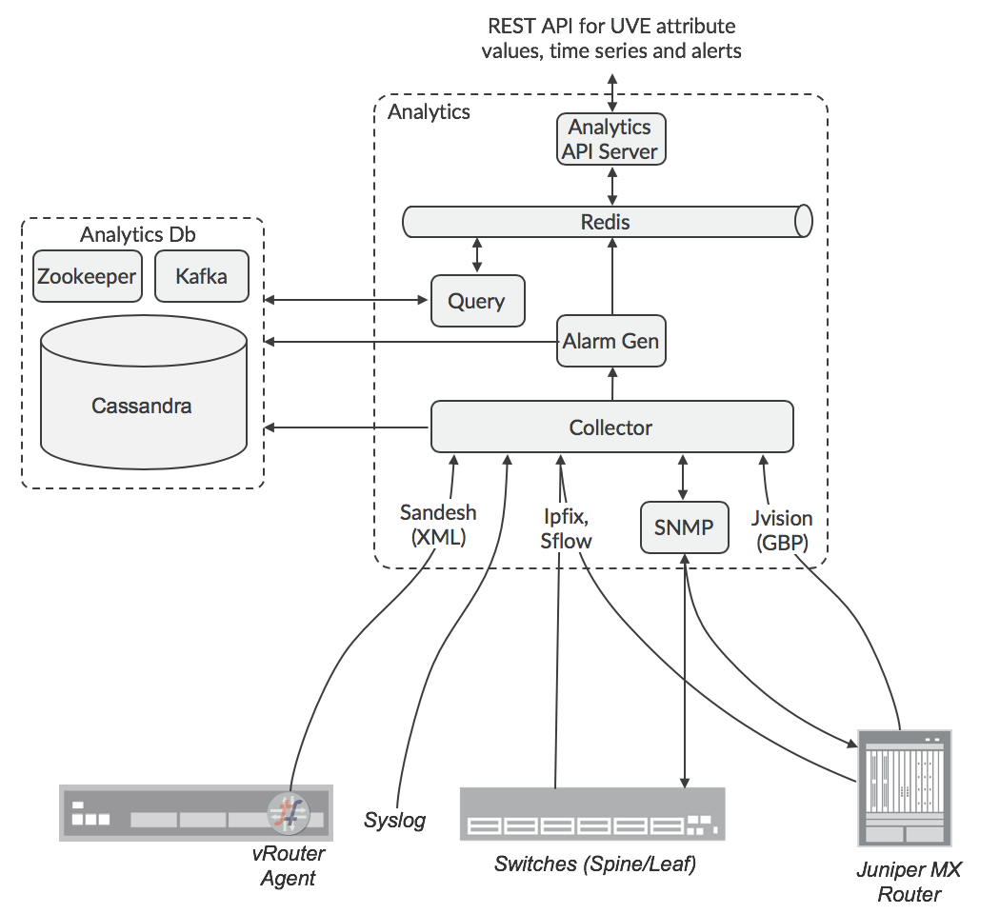
The data sources can be configured with the IP address of a destination collector, or there can be a load balancer for the collectors. The responsibility for SNMP polling is distributed across nodes by Zookeeper. The analytic nodes normalize incoming data to a common data format, then send it into a Cassandra database via the Kafka service. The API URL may be load-balanced using ha-proxy or some other load-balancer. The responsibility for collecting the data for UVEs is distributed among the Analytics nodes using Zookeeper, so API queries for UVE data are replicated by the receiving node to the other Analytics nodes, and the one(s) that hold data relating to the request will respond back to the original node, which will collate the responses into the payload that the requestor will receive. Responsibility for alarm generation is also distributed across nodes, so the Alarm Generation function subscribes to the Kafka buses in Analyticsdb nodes in order to observe the data needed to calculate if an alarm condition is met, since this data may be collected by other nodes. The UVEs are hashed across a number of Kafka topics, which are distributed among Alarm Gen functions in order to spread the load effectively.
Tungsten Fabric Deployment
The latest versions of Tungsten Fabric (5.0 and later) use a microservices architecture based on Docker containers. The microservices are grouped into pods, which correspond to roles that are assigned to servers during deployment. The relationship of microservices to pods is shown in the diagram, below.
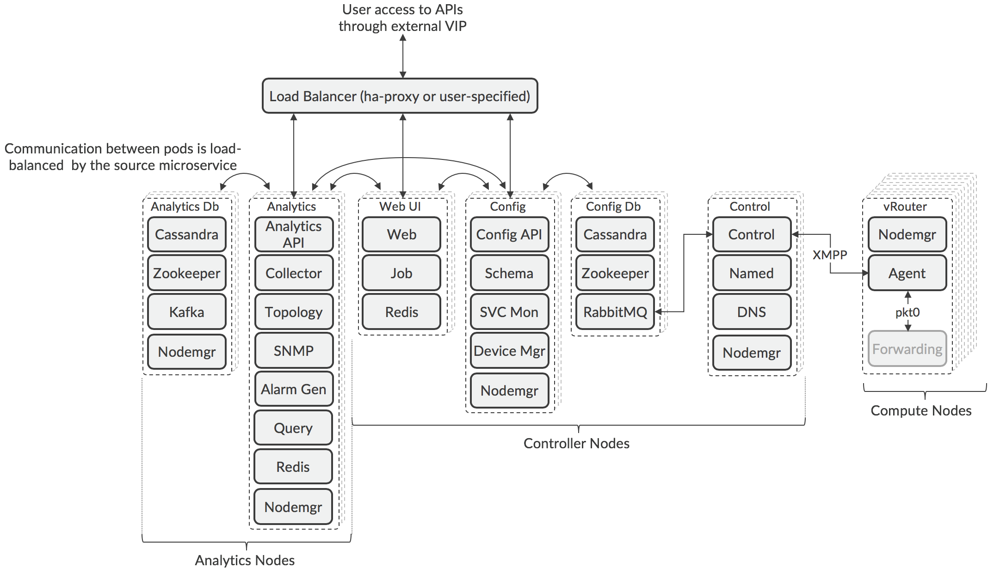
The architecture is composable, meaning that each Tungsten Fabric role can be separately scaled using multiple pods running on different servers to support the resilience and performance requirements of a particular deployment. Due to the nature of the algorithm in Zookeeper for choosing the active node, the number of pods deployed in the Controller and Analytic nodes must be an odd number, but this can vary between pod types. The nodes are logical groupings whose pods may be deployed on different servers, and a server can run pods from different node types.
The API and Web GUI services are accessed through a load balancer that is deployed during Contrail installation, or through a third-party load balancer has been configured for this purpose. Use of a third-party load balancer can allow pods to be in different subnets, which is a common scenario when pods need to be placed in different racks in a datacenter for resilience.
The Control pods are scaled according to the number of compute nodes in the cluster with a maximum of 1000 nodes per control node. Additional control nodes may be deployed in certain use cases where compute nodes are deployed in points-of-presence remotely from the controller nodes.
The number of compute nodes is scaled according the the needs of the workloads that are anticipated to be deployed by the orchestrator. Within a compute node, the Forwarder function is not implemented as a container (see XXX [Deployment Options for vRouter]
The layout of Tungsten Fabric services across servers is controlled by configuration files that are read by the deployment tool, which can be Ansible (using playbooks) or Helm (using charts). Example playbooks and charts are available that cover simple all-in-one deployments where all the services run in the same VM, to high-availability examples involving multiple VMs or bare metal servers. Examples are also provided where the orchestrator and Tungsten Fabric are running in a public cloud (e.g. Amazon Web Services, Google Cloud Engine, Microsoft Azure) and the workloads are also running there.
More details on deployment tools and how to use them can be found at the Tungsten Fabric website (www.tungsten.io).
Tungsten Fabric APIs
Tungsten Fabric supports the following APIs:
- REST API for controller configuration
- Python bindings that map to the REST configuration API
- REST API for access to analytics data
This are described in more detail in the following sections.
Controller Configuration REST API
All configuration for a Tungsten Fabric cluster is available through a REST API that is accessed on port 8082 of the Tungsten Fabric external virtual IP address. Users can use HTTP GET calls to retrieve lists of resources or the details of their properties. Data is returned as a JSON object.
Changes can be made to the Tungsten Fabric object model (e.g. add virtual network, create service chain) by sending HTTP POST commands that contain a JSON representation of the attributes of the new object.
The REST API is automatically generated from the data model schema file when Tungsten Fabric is compiled and built.
Python Bindings
Also generated automatically during compilation are a set of Python bindings that map to the REST API.
In a Python session or script, a session is opened as follows:
from vnc_api import vnc_api \
\
vnc = vnc_api.VncApi( \
username = "admin", \
password = "<password>", \
tenant_name = "admin", \
api_server_host = "10.1.1.1", \
auth_host = "10.1.1.2") \
And a virtual network could be created using:
tenant = vnc.project_read(fq_name = ['default-domain', tenant_name])
vn = vnc_api.VirtualNetwork(name = name, parent_obj = tenant)
ipam = vnc.network_ipam_read(
fq_name = ['default-domain', tenant_name, ipam_name])
prefix, prefix_len = cidr.split('/')
subnet = vnc_api.SubnetType(
ip_prefix = prefix, ip_prefix_len = prefix_len)
ipam_subnet = vnc_api.IpamSubnetType(subnet = subnet)
vn.set_network_ipam(
ref_obj = ipam,
ref_data = vnc_api.VnSubnetsType([ipam_subnet]))
vnc.virtual_network_create(vn)
The Python binding is generally easier to use than the REST API, since it does not require usage of a JSON payload.
Analytics REST API
The analytics data collected in Tungsten Fabric can be accessed through a REST API on port 8082 of the Tungsten Fabric external virtual IP address. Configuration and operational information is organized in objects known as User Visible Entities (UVEs) which can contain attributes that are aggregated from a number of Tungsten Fabric components. For instance, the operational information for a virtual network might have come from vRouters, configuration pods and control pods. Output from the Analytics API is in the form of JSON payloads. UVE data is retrieved with a direct URL to the location of the data.
HTTP GET queries are used to retrieve lists of tables within the analytics database and to obtain their APIs and schemas.
HTTP POST queries are used to retrieve time series data stored in a table. The POST queries include a JSON formatted version of an SQL query that specifies the table, fields and where condition to match against. The Analytics API includes an additional feature allowing the specification of a start time and end time for retrieved data.
The Analytics API can be used to configure and retrieve alarms based on threshold crossing events for any time series stored in the analytics database.
Server-sent event (SSE) streams can be configured for for any UVE or alarm in the analytics database.
Orchestrators
The following section describe how Tungsten Fabric provides virtual networking for a variety of orchestrators:
- OpenStack
- Kubernetes
- VMware vCenter
OpenStack with Tungsten Fabric
OpenStack is the leading open-source orchestration system for virtual machines and containers. Tungsten Fabric provides an implementation of its Neutron networking service, and provides many additional capabilities as well. In OpenStack, groups of users are assigned to “projects” within which resources such as VMs and networks are private and can’t be seen by users in other projects (unless this is specifically enabled). The use of VRFs in vRouters, with their per-network routing tables, makes the enforcement of project isolation in the network layer straight-forward, since only routes to allowed destinations are distributed to VRFs in vRouters on compute nodes and no flooding occurs due to the proxy services that vRouter performs.
In the diagram in XXX, the networking service is Neutron and the compute agent is Nova (the OpenStack compute service).
Tungsten Fabric can provide seamless networking between VMs and Docker containers when both are deployed in an OpenStack environment.
In the diagram below, it can be seen that the Tungsten Fabric plug-in for OpenStack provides a mapping from the Neutron networking API to Tungsten Fabric API calls that are performed in the Tungsten Fabric controller.
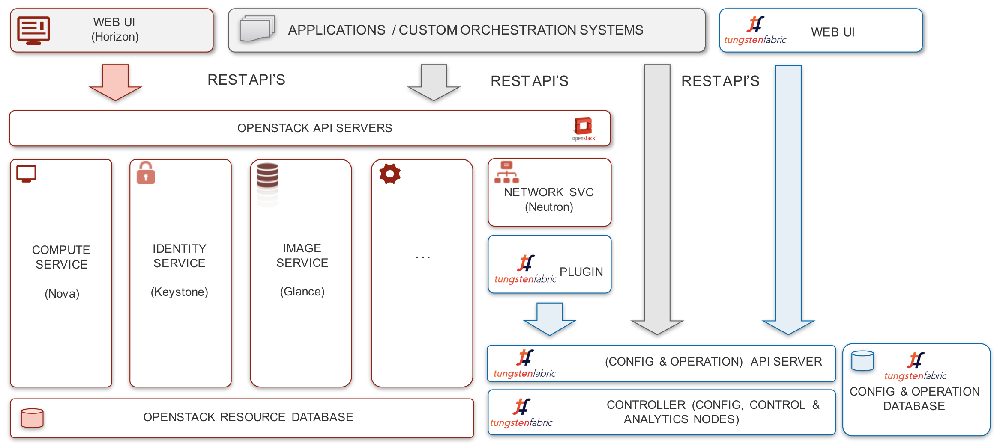
Tungsten Fabric supports definition of networks and subnetworks, plus OpenStack network policies and security groups. These entities can be created in either OpenStack or Tungsten Fabric and any changes are synchronized between the two systems. Additionally, Tungsten Fabric supports the OpenStack LBaaS v2 API. However, since Tungsten Fabric provides a rich superset of networking features over OpenStack, many networking features are only available via the Tungsten Fabric API or GUI. These include assigning route targets to enable connectivity to external routers, service chaining, configuring BGP route policies and application policies.
Application security, as described in the section XXX, is fully supported when OpenStack uses Tungsten Fabric networking. Tungsten Fabric tags can be applied at the project, network, host, VM or interface levels, and propagate to be applied to all entities that are contained in the object that a tag is applied to.
Additionally, Tungsten Fabric supports a set of resources for networking and security that can be controlled using OpenStack Heat templates.
Kubernetes Containers with Tungsten Fabric
Containers allow multiple processes to run on the same operating system kernel, but with each having access to its own tools, libraries and configuration files. Containers require less compute overhead than virtual machines where each VM runs its own complete guest operating system. Applications running in containers will generally start up much faster, and perform better than the same application running in a VM, and this is one of the reasons why there is growing interest in using containers in datacenters and for NFV. Docker is a software layer that enables containers to be portable across operating system versions and is the typical Container Runtime Interface used by Kubernetes deployments as a shim layer to manage creation and destruction of containers on servers.
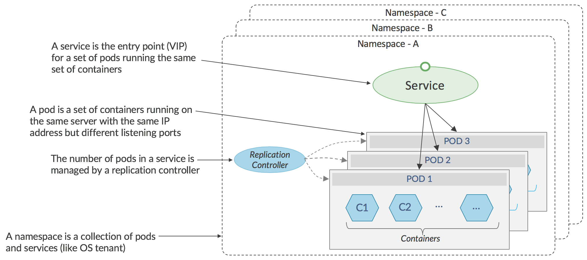
As seen in the diagram, above, Kubernetes manages groups of containers, that together perform some function, and are called _pods._The containers in a pod run on the same server and share an IP address. Sets of identical pods (generally running on different servers) form _services _and network traffic destined for a service has to be directed to a specific pod within a service. In the stock Kubernetes networking implementation, selection of a specific pod is performed either by the application itself using a native Kubernetes API in the sending pod, or, for non-native applications, by a load-balancing proxy using a virtual IP address implemented in Linux iptables on the sending server. The majority of applications are non-native, since they are ports of existing code that was not developed with Kubernetes in mind, and therefore the load-balancing proxy is used.
The standard networking in a Kubernetes environment is effectively flat, with any pod able to communicate with any other pod. Communication from a pod in one namespace (similar to a _project _in OpenStack) to a pod in another namespace is not prevented if the name of target pod, or its IP address is known. While this model is appropriate in hyperscale data centers belonging to a single company, it is unsuitable for service providers whose data centers are shared among many end-customers, or in enterprises where traffic for different groups must be isolated from each other.
Tungsten Fabric virtual networking can be integrated in a Kubernetes environment to provide a range of multi-tenant networking features in similar fashion as with OpenStack.
This configuration of Tungsten Fabric with Kubernetes is shown below.
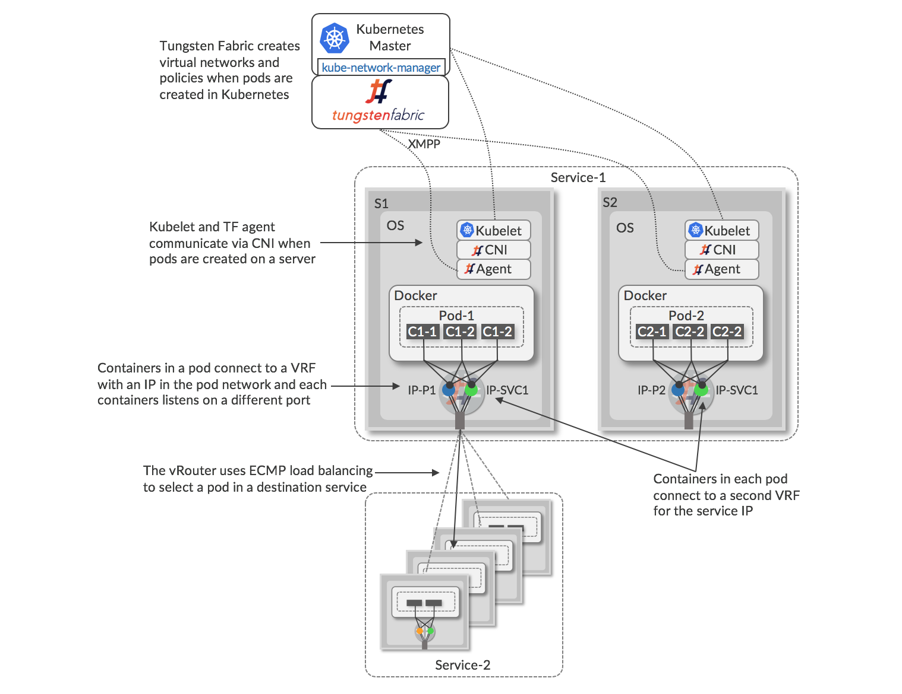
The architecture for Tungsten Fabric with Kubernetes orchestration and Docker containers is similar to OpenStack and KVM/QEMU, with the vRouter running in the host Linux OS and containing VRFs with virtual network forwarding tables. All containers in a pod share a networking stack with a single IP address (IP-1, IP-2 in the diagram), but listen on different TCP or UDP ports, and the interface of each networking stack is connected to a VRF at the vRouter. A process called _kube-network-manager _listens for network-related messages using the Kubernetes _k8s _API and sends these into the Tungsten Fabric API. When a pod is created on a server, there is communication between the local _kubelet _and the vRouter agent via the Container Network Interface (CNI) to connect the new interfaces into the correct VRFs. Each pod in a service is allocated a unique IP addresses within a virtual network, and also a floating IP address which is the same for all the pods in a service. The service address is used to send traffic into the service from pods in other services, or from external clients or servers. When traffic is sent from a pod to a service IP, the vRouter attached to that pod performs ECMP load-balancing using the routes to the service IP address that resolve to the interfaces of the individual pods that form the destination service.
When traffic needs to sent to a service IP from outside the Kubernetes cluster, Tungsten Fabric can be configured to create a pair (for redundancy) of ha-proxy load balancers which can perform URL-based routing to Kubernetes services, preferably using floating IP addresses to avoid exposing the internal IP addresses of the cluster. These externally visible service addresses resolve to ECMP load balanced routes to pods of the service. Kubernetes proxy load-balancing is not needed when Tungsten Fabric virtual networking is used in a Kubernetes cluster.
Other alternatives for providing external access include: using a floating IP address which is associated with a load balancer object, or using a floating IP address associated with the service.
When services and pods are created or deleted in Kubernetes, the kube-network-manager process detects corresponding events in the k8s API, and it uses the Tungsten Fabric API to apply network policy according to the network mode that has been configured for the Kubernetes cluster. The various options are summarized in the following table.
| Networking Mode | Network Policy | Effect |
| Kubernetes default | Any-to-any, no tenant isolation | Any container can talk to any other container or service |
| Namespace isolation | Kubernetes namespaces map to projects in Tungsten Fabric | Containers within a namespace can communicate with each other |
| Service isolation | Each pod is in its own virtual network and security policy is applied so that only the service IP address is accessible from outside the pod | Communication within a pod is enabled, but only the service IP address is accessible from outside a pod |
| Container isolation | Zero-trust between containers in the same pod. | Only specifically allowed communications between containers are enabled, even within a pod. Only specific pod to specific services may be enabled. |
Tungsten Fabric brings many powerful networking features to the Kubernetes world, in the same way that it does for OpenStack, including:
- IP address management
- DHCP
- DNS
- Load balancing
- Network address translation (1:1 floating IPs and N:1 SNAT)
- Access control lists
- Application-based security
Tungsten Fabric and VMware vCenter
VMware vCenter is in widespread use as a virtualization platform, but requires manual configuration of a network gateway in order to achieve networking between virtual machines that are in different subnets and with destinations external to a vCenter cluster. Tungsten Fabric virtual networking can be deployed in an existing vCenter environment to provide all the networking features that were listed previously, while preserving the workflows that users may have come to rely on to create and managed virtual machines using the vCenter GUI and API. Additionally, support has been implemented for Tungsten Fabric in vRealize Orchestrator and vRealize Automation so that common tasks in Tungsten Fabric such as creation of virtual networks and network policies can be included in workflows implemented in those tools.
The architecture for Tungsten Fabric working with VMware vCenter is shown in the diagram, below.
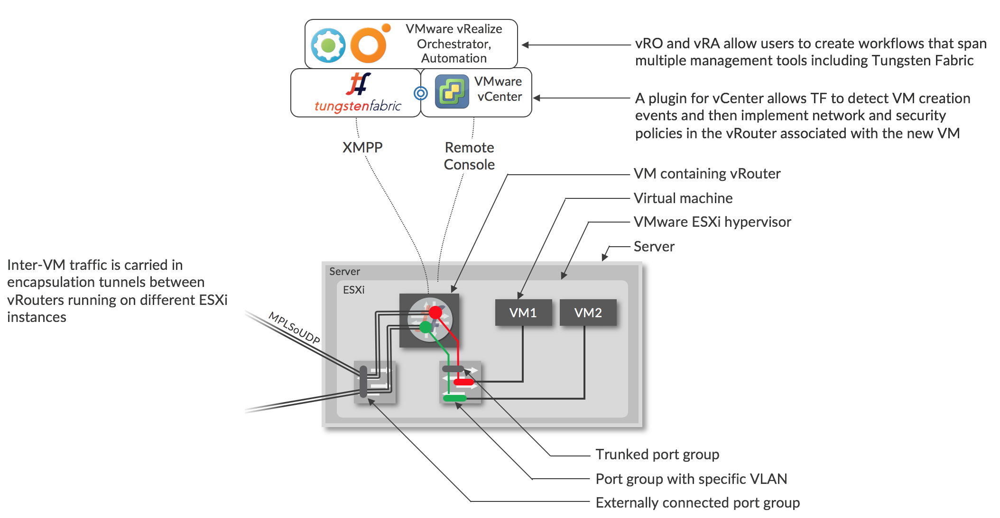
Virtual networks and policies are created in Tungsten Fabric, either directly, or using TF tasks in vRO/vRA workflows.
When a VM is created by vCenter, using its GUI or via vRO/vRA, the vCenter plugin for Tungsten Fabric will see a corresponding message on the vCenter message bus, and this is the trigger for Tungsten Fabric to configure the vRouter on the server that the VM will be created on. Each interface of each VM is connected to a port group that corresponds to the virtual network that the interface is in. The port group has a VLAN associated with it that is set by the Tungsten Fabric controller using the “VLAN override” option in vCenter, and all the VLANs for the port groups are sent through a trunked port group into the vRouter. The Tungsten Fabric controller maps between the VLAN of a interface to the VRF of the virtual network that contains that subnet. The VLAN tag is stripped, and route look up in the VRF is performed as described in the section XXX
Using Tungsten Fabric with vCenter gives users access to the full range of network and security services that Tungsten Fabric offers as described in earlier in this document, including zero-trust micro-segmentation, proxy DHCP, DNS and DHCP which avoids network flooding, easy service chaining, almost unlimited scale, and seamless interconnection with physical networks.
Nested Kubernetes with OpenStack or vCenter
In the previous section, the it was assumed that the KVM hosts where the containers run had been provisioned beforehand by some means. An alternative is to use OpenStack or vCenter to provision VMs in which the containers run, and for Tungsten Fabric to manage virtual networking between VMs created by OpenStack or vCenter and containers created by Kubernetes. This is illustrated below.
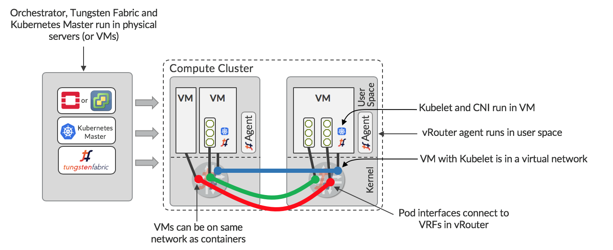
The orchestrator (OpenStack or vCenter), Kubernetes Master and Tungsten Fabric are running in a set of servers or VMs. The orchestrator is configured to manage the compute cluster with Tungsten Fabric, so there are vRouters on each server. VMs can be spun up and configured to run Kubelet and the CNI plugin for Tungsten Fabric. These VMs become available for the Kubernetes master to run containers in, with networking managed by Tungsten Fabric. Since the same Tungsten Fabric is managing the networks for both the orchestrator and Kubernetes, seamless networking is possible between VMs, between containers, and between VMs and containers.
In the nested configuration, Tungsten Fabric delivers the same levels of isolation as described previously, and it is possible for multiple Kubernetes Masters to co-exist and for multiple VMs running Kubelet to run on the same host. This allows a multi-tenant Kubernetes container service to be offered.
Connecting to Physical Networks
In any datacenter, there is a need for some VMs to access external IP addresses, and for users outside the datacenter to access some VMs via public IP addresses. Tungsten Fabric provides several ways to achieve this:
- VPN connection to a BGP-enabled gateway
- Source NAT in the vRouter
- Local gateway in the vRouter to the underlay fabric
Each of these is applicable in different use cases, and have varying dependencies on configuration of external devices and networks.
The methods of connection to external networks are described in the following sections.
BGP-Enabled Gateway
One way of achieving external connectivity is to create a virtual network using a range of externally routable IP addresses, and to extend the network to a gateway router. When the gateway router is a Juniper MX router, the configuration on the device can be done automatically by Tungsten Fabric. This is illustrated below.
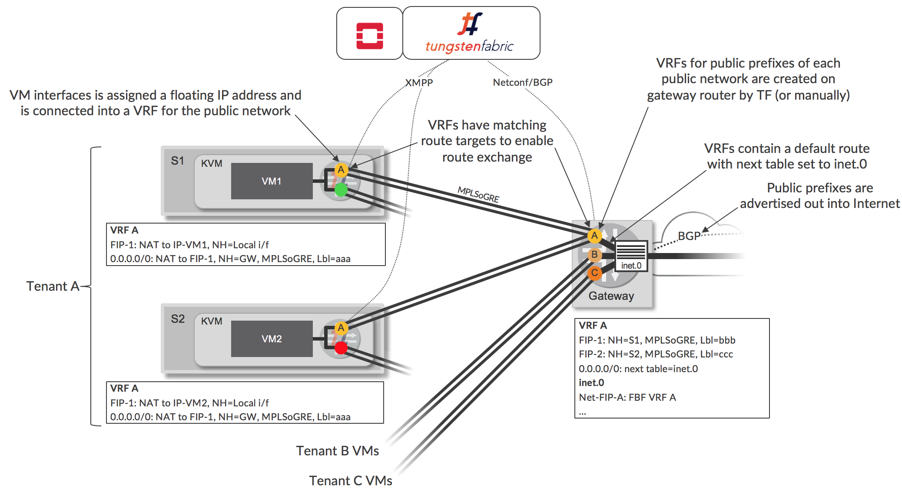
Network A is defined in Tungsten Fabric, and contains a subnet of publicly addressable IP addresses. This public virtual network is configured in Tungsten Fabric to extend to the gateway router, which, when using Tungsten Fabric Device Manager results in automatic creation of a VRF on the gateway with route target matching that of the virtual network (e.g. VRF labeled A). Tungsten Fabric configures this VRF with a default route that causes route lookup for traffic arriving in the VRF from the Tungsten Fabric cluster to occur in the main inet.0 routing table (which will contain routes to public destinations in the Internet). A forwarding filter is installed, which causes traffic arriving at the gateway with destinations in the Network A to be looked up in the VRF that Tungsten Fabric created. The router advertises a default route via the VRF to the Tungsten Fabric controller.
Network A is configured to be a floating IP address pool in Tungsten Fabric, and when such an address is assigned to an existing VM interface, an additional VRF (e.g. for Network A) is created in the vRouter for the VM, and the interface is connected to the new, public VRF, in addition to being connected to the original VRF (green or red in Figure 6). VRFs for floating IP addresses perform 1:1 NAT between the floating IP address and the IP address configured on the VM. The VM is unaware of this additional connection and continues to send and receive traffic using the address for its original virtual network that it received via DHCP. The vRouter advertises a route to the floating IP address to the controller, and this route is sent to the gateway via BGP and it is installed in the public VRF (e.g. VRF A). The Tungsten Fabric controller sends the vRouter a default route via the VRF on the physical router and this is installed in vRouter’s public VRF.
The result of these actions is that the public VRFs on vRouters contain a route to a floating IP address via a local interface of a VM, and a default route via a VRF on the router. The VRFs on the gateway have a default route (implemented using filter-based forwarding) via the inet.0 route table, and have host routes to each allocated floating IP address. The inet.0 route table has routes to each floating IP network via the corresponding VRF.
Multiple separate public subnets can be used as separate floating IP address pools with their own VRFs when tenants own their own public IP address ranges (as shown in the diagram), and conversely, one floating IP address pool can be shared among multiple tenants (not shown).
In cases where a non-Juniper device is used, or Tungsten Fabric is not permitted to make configuration changes on the gateway, a BGP session, public network prefix and static routes can be set up on the gateway manually, or by a configuration tool. This method is used when the router is combining a provider edge (PE) router role for enterprise VPNs with a datacenter gateway role. Generally, in this case, the VRFs will created by a VPN management system. A virtual network in the Tungsten Fabric cluster will be connected into an enterprise VPN when a matching route target is configured in the virtual network, and routes are exchanged between the controller and the gateway/PE.
Source NAT
Tungsten Fabric enables networks to be connected via a Source-based NAT service which allows multiple VMs or containers to share the same external IP address. Source NAT is implemented as a distributed service in each vRouter. The next hop for traffic being sent from a VM to the Internet will be the SNAT service in the same vRouter, and it will forward to the gateway of the underlay network without encapsulation, with source address modified to that of the vRouter host and setting source port to be specific to the sending VM. The vRouter uses the destination port in returning packets to map back to the originating VM.
This option is useful for providing internet access for workloads where the actual IP address of the source does not need to be known by the destination (which is usually the case).
Routing in Underlay
Tungsten Fabric allows networks to be created that use the underlay for connectivity. In the case that the underlay is a routed IP fabric, the Tungsten Fabric controller is configured to exchange routes with the underlay switches. This allows virtual workloads to connect to any destination reachable from the underlay network and provides a much simpler way than a physical gateway to connect virtual workloads to external networks. Care must be taken that overlapping IP address are not connected into the fabric, so this feature is more useful for enterprises connecting cloud to legacy resources rather than multi-tenant service providers.
Note that the traffic flowing to and from the underlay network is subject to network and security policy enforcement just as it is for traffic between workloads using virtual networks.